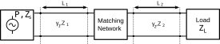
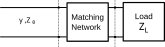
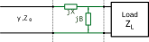
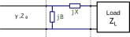
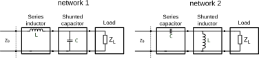
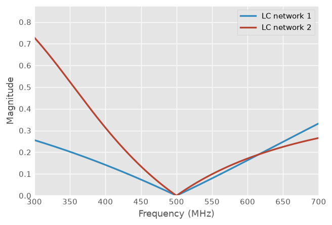
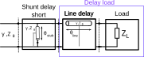

Impedance Matching#
Introduction#
The general problem is illustrated by the figure below: a generator with an internal impedance \(Z_S\) delivers a power to a passive load \(Z_L\), through a 2-ports matching network. This problem is commonly named as “the double matching problem”. Impedance matching is important for the following reasons:
maximizing the power transfer. Maximum power is delivered to the load when the generator and the load are matched to the line and power loss in the line minimized
improving signal-to-noise ratio of the system
reducing amplitude and phase errors
reducing reflected power toward generator

As long as the load impedance \(Z_L\) has a real positive part, a matching network can always be found. Many choices are available and the examples below only describe a few. The examples are taken from the D.Pozar book “Microwave Engineering”, 4th edition.
[1]:
import matplotlib.pyplot as plt
import numpy as np
import skrf as rf
rf.stylely()
Matching with Lumped Elements#
To begin, let’s assume that the matching network is lossless and the feeding line characteristic impedance is \(Z_0\):

The simplest type of matching network is the “L” network, which uses two reactive elements to match an arbitrary load impedance. Two possible configuration exist and are illustrated by the figures below. In either configurations, the reactive elements can be inductive of capacitive, depending on the load impedance.


Let’s assume the load is \(Z_L = 200 - 100j \Omega\) for a line \(Z_0=100\Omega\) at the frequency of 500 MHz.
[2]:
Z_L = 200 - 100j
Z_0 = 100
f_0_str = '500MHz'
Let’s define the Frequency and load Network:
[3]:
# frequency band centered on the frequency of interest
frequency = rf.Frequency(start=300, stop=700, npoints=401, unit='MHz')
# transmission line Media
line = rf.media.DefinedGammaZ0(frequency=frequency, z0=Z_0)
# load Network
load = line.load(rf.tlineFunctions.zl_2_Gamma0(Z_0, Z_L))
We are searching for a L-C Network corresponding to the first configuration above:

[4]:
def matching_network_LC_1(L, C):
' L and C in nH and pF'
return line.inductor(L*1e-9)**line.shunt_capacitor(C*1e-12)**load
def matching_network_LC_2(L, C):
' L and C in nH and pF'
return line.capacitor(C*1e-12)**line.shunt_inductor(L*1e-9)**load
Finding the set of inductance \(L\) and the capacitance \(C\) which matches the load is an optimization problem. The scipy package provides the necessary optimization function(s) for that:
[5]:
from scipy.optimize import minimize
# initial guess values
L0 = 10 # nH
C0 = 1 # pF
x0 = (L0, C0)
# bounds
L_minmax = (1, 100) #nH
C_minmax = (0.1, 10) # pF
# the objective functions minimize the return loss at the target frequency f_0
def optim_fun_1(x, f0=f_0_str):
_ntw = matching_network_LC_1(*x)
return np.abs(_ntw[f_0_str].s).ravel()
def optim_fun_2(x, f0=f_0_str):
_ntw = matching_network_LC_2(*x)
return np.abs(_ntw[f_0_str].s).ravel()
[6]:
Optimum found for LC network 1: L=38.9848401555494 nH and C=0.9227738237296625 pF
[7]:
Optimum found for LC network 2: L=46.13869161617226 nH and C=2.5989893367450008 pF
[8]:
ntw1 = matching_network_LC_1(*res1.x)
ntw2 = matching_network_LC_2(*res2.x)
[9]:
ntw1.plot_s_mag(lw=2, label='LC network 1')
ntw2.plot_s_mag(lw=2, label='LC network 2')
plt.ylim(bottom=0)
[9]:
(0.0, 0.8742937659033543)

Single-Stub Matching#
Matching can be made with a piece of open-ended or shorted transmission line ( stub ), connected either in parallel ( shunt ) or in series. In the example below, a matching network is realized from a shorted transmission line of length (\(\theta_{stub}\)) connected in parallel, in association with a series transmission line (\(\theta_{line}\)). Let’s assume a load impedance \(Z_L=60 - 80j\) connected to a 50 Ohm transmission line.

Let’s match this load at 2 GHz:
[10]:
Z_L = 60 - 80j
Z_0 = 50
f_0_str = '2GHz'
# Frequency, wavenumber and transmission line media
freq = rf.Frequency(start=1, stop=3, npoints=301, unit='GHz')
beta = freq.w/rf.constants.c
line = rf.media.DefinedGammaZ0(freq, gamma=1j*beta, z0=Z_0)
[11]:
def resulting_network(theta_delay, theta_stub):
"""
Return a loaded single stub matching network
NB: theta_delay and theta_stub lengths are in deg
"""
delay_load = line.delay_load(rf.tlineFunctions.zl_2_Gamma0(Z_0, Z_L), theta_delay)
shunted_stub = line.shunt_delay_short(theta_stub)
return shunted_stub ** delay_load
Optimize the matching network variables theta_delay and theta_stub to match the resulting 1-port network (\(|S|=0\))
[12]:
from scipy.optimize import minimize
def optim_fun(x):
return resulting_network(*x)[f_0_str].s_mag.ravel()
x0 = (50, 50)
bnd = (0, 180)
res = minimize(optim_fun, x0, bounds=(bnd, bnd))
print(f'Optimum found for: theta_delay={res.x[0]:.1f} deg and theta_stub={res.x[1]:.1f} deg')
Optimum found for: theta_delay=39.8 deg and theta_stub=34.2 deg
[13]:
# Optimized network at f0
ntw = resulting_network(*res.x)
ntw.plot_s_db(lw=2)

[ ]: